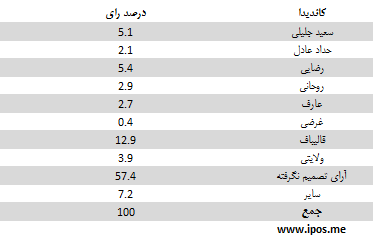
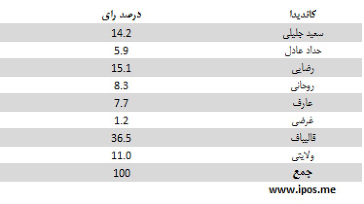
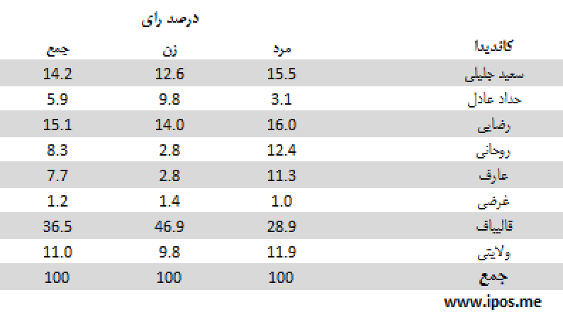
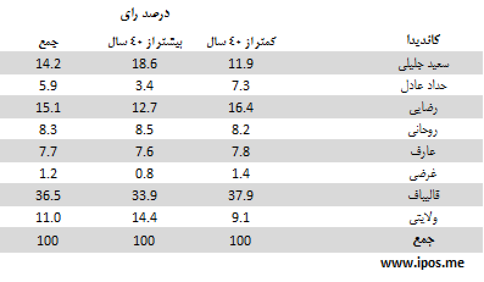
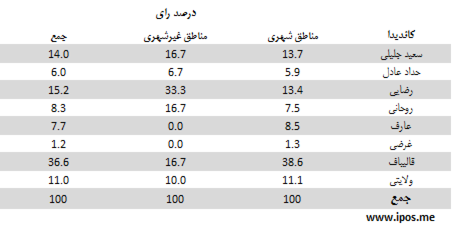

مهمترین یافتهها:
- آخرین نظرسنجی iPOS، که پیش از شروع آخرین مناظرهی نامزدهای ریاستجمهوری در جمعه 17 خرداد انجام شده، نشان میدهد که بیش از نیمی از پاسخگویانی که میگویند در انتخابات شرکت میکنند هنوز رای مشخصی ندارند. میزان تصمیمنگرفتهها اکنون حدود 57 درصد است. 7 درصد از پاسخگویان نیز به اشخاصی غیر از نامزدهای موجود اظهار تمایل کرده یا از پاسخ خودداری کردهاند.
- در میان کل افراد متمایل به شرکت در انتخابات، آقای قالیباف با 13 درصد هنوز بالاتر از سایر نامزدها قرار دارد. بعد از ایشان، آقایان رضایی (5.4 ردصد) و جلیلی (5 درصد) قرار دارند. آقایان ولایتی، روحانی و عارف در ردههای بعدی قرار میگیرند. آقایان حدادعادل و غرضی کماکان در انتهای جدول قرار دارند.
- اگر از میان پاسخگویانی که میگویند در انتخابات شرکت میکنند فقط کسانی در نظر گرفته شوند که تاکنون تصمیم گیری کرده و از میان 8 نامزد موجود یک نفر را انتخاب کرده اند، آرای آقایان قالیباف و رضایی اندکی کاهش نشان میدهد. در مقابل آرای آقایان جلیلی، روحانی و عارف نشاندهندهی افزایشی اندک است.
- بر اساس نتایج به دست آمده از آخرین نظرسنجی پیش از آخرین مناظره میتوان گفت از میان شرکتکنندگان احتمالی در انتخابات که تاکنون تصمیم گیری کرده و از میان 8 نامزد موجود یک نفر را انتخاب کرده اند، آقای قالیباف با 36 درصد بالاتر از سایر نامزدها قرار دارند. بعد از ایشان، آقایان رضایی با 15 درصد، جلیلی با 14 درصد، ولایتی با 11 درصد، روحانی و عارف با 8 درصد، حدادعادل با 6 درصد و غرضی با یک درصد در رتبه های دوم تا هشتم قرار میگیرند.
- در طول 6 روز اخیر آرای 6 نامزد دچار افت و خیز بوده است، اما آرای آقایان جلیلی و ولایتی روندی ثابت ولی متضاد داشته است: آرای آقای جلیلی از رشدی مداوم (از 9 به 14 درصد) برخوردار بوده است و در مقابل آرای آقای ولایتی از کاهشی مدواوم (از 19 به 11 درصد).
سئوال: اگر قرار بود همین امروز در انتخابات ریاست جمهوری شرکت کنید به کدام یک از کاندیداها رای میدادید؟

این جدول نشان میدهد پاسخدهندگانی که میگویند در انتخابات شرکت میکنند، از نظر تصمیمگیری برای رای دادن در چه و ضعیتهایی قرار دارند.
سئوال: اگر قرار بود همین امروز در انتخابات ریاست جمهوری شرکت کنید به کدام یک از کاندیداها رای میدادید؟

این جدول نشان میدهد از میان پاسخدهندگانی که میگویند در انتخابات شرکت میکنند، و از میان 8 نامزد موجود یک نفر را انتخاب کردهاند، هریک از نامزدها چه میزان رای دارند.
جدول زیر میزان اقبال به نامزدها را بر اساس جنسیت (زن و مرد) نشان میدهد:

در جدول زیر میزان آرای نامزدها در میان دو گروه سنی (کمتر از 40 سال و بیشتر از 40 سال) مقایسه شده است:

انتخاب رای دهندگان در جدول زیر بر اساس سطح تحصیلات (بدون تحصیلات دانشگاهی و دارای تحصیلات دانشگاهی) مقایسه شده است:

در جدول زیر میزان آرای نامزدها در میان پاسخ دهندگان مقیم در مناطق شهری و غیر شهری مقایسه شده است:

تحلیل:
میزان مشارکت
- میزان مشارکت در این نظرسنجی همچنان بالای 70 درصد است. اگر درصد بالایی از کسانی را که از پاسخ به سوالات ما امتناع کردهاند، معادل کسانی فرض کنیم که در انتخابات شرکت نخواهند کرد و به همین دلیل از پاسخ به سوالات مربوط به انتخابات سرباززدهاند، آنگاه میزان مشارکت به مقدار قابل توجهی کاهش خواهد یافت. با نزدیک شدن به روزهای انتخابات می توان تصویر دقیق تری از میزان مشارکت احتمالی به دست داد.
- با این همه باید افزود میزان مشارکت بالا در این نظرسنجی لزوماً معادل همان میزان از نسبت شرکت کنندگان در روز انتخابات نیست. در نظرسنجیها، معمولاً میزان «اعلام مشارکت»، بیش از میزان «مشارکت عملی» در روز انتخابات است. تفاوت «مشارکت اعلامی» و «مشارکت عملی» فقط به ایران اختصاص ندارد.
- اعلام مشارکت بالا، فقط جنبهی سیاسی هم ندارد که ناشی از ترس در پاسخ به این سوال باشد، بلکه می تواند ناشی از این واقعیت ساده باشد که وقتی از مردم برای شرکت در انتخابات سوال می شود آنان فقط باید تمایل خود را «اعلام» کنند اما نیاز به «عمل» (شامل آماده شدن، رفت و آمد، هزینههای زمانی و مادی) برای رای دادن ندارند. حال آن که در روز رای گیری آنان باید همه این اعمال را انجام دهند، که به سادگی اعلام یک کلمه «بله» نیست.
- اعلام مشارکت بالا، همچنین می تواند تا حدی نیز ناشی از ملاحظات روانشناسی سیاسیِ حاکم بر جامعهی ایران باشد، ملاحظاتی که می تواند مردم را به همنوایی با خواست حکومت مبنی بر لزوم شرکت در انتخابات سوق دهد. این همنوایی می تواند نوعی اریبی روشمند در داده های مربوط به میزان مشارکت ایجاد کند.
- با توجه به همهی این ملاحظات ارقام میزان مشارکت در این نظرسنجی را باید با احتیاط تفسیر کرد.
رای به نامزدها
- اگر به روند آرای نامزدها از آغاز رسمی رقابتهای انتخاباتی نگاه کنیم، برخی روندهای مهم را میتوان چنین توضیح داد، با این ملاحظه که به دلیل سیال بودن رای بیشتر مردم تا زمان پایان این نظرسنجی، نوسانهای این روندها را باید با احتیاط تفسیر کرد. این روندها، در روزهای آینده میتواند به کلی تغییر کند:
- آرای آقای جلیلی (بدون نوسان) و آرای آقای رضایی (با نوساناتی اندک) رو به رشد بوده است. آرای آقای جلیلی از 9 به 14 درصد و آقای رضایی از 16 به 17 درصد ارتقاء یافته است.
- با توجه به اختلاف مشاهده شده در میان اعضای اتتلاف 2+1 اگر این ائتلاف را به صورت ائتلاف 2-1(آقایان ولایتی و حداد منهای آقای قالیباف) در نظر بگیریم ملاحظه میشود آرای آقای قالیباف تا روز قبل از این نظر سنجی یک دوره رشد و یک دوره نزول اندک داشته است (از 31 به 39 و اکنون روی 36 درصد)
- آرای دو نامزد دیگر این ائتلاف، یعنی آقایان ولایتی و حدادعادل از 25 به 17 نزول کرده است.
- با این حال جمع آرای ائتلاف 2+1 در مقایسه بین روز اول و آخر نظرسنجیها ثابت است (56 درصد).
- اگر نوعی ائتلاف مفروض بین آقایان عارف و روحانی را بتوان تصور کرد، ملاحظه میشود که جمع آرای این دو نیز در مقایسه بین روز اول و آخر نظرسنجیها ثابت (حدود 16 درصد) بوده است.
- بررسی آرای نامزدها بر اساس جنسیت، سن، تحصیلات و منطقهی زندگی، از نظر آماری رابطهی معنی داری بین این عوامل و رای به نامزدها را نشان نمیدهد. به علاوه این رابطهها سیال است و در بسیاری از موارد روز به روز تغییراتی را نشان میدهد که حاکی از تاثیر نمونه بر آن است. با این همه برخی تفاوتها، با رعایت این ملاحظات، قابل ذکر است.
- بررسی آرای نامزدها بر اساس جنسیت پاسخگویان نشان می دهد از میان کسانی که به آقایان قالیباف و حداد و ولایتی رای می دهند، نسبت زنان اندکی بیشتر از مردان است.
- .همچنین می توان گفت، در میان رای دهندگان به آقایان حداد، رضایی و قالیباف، افراد کمتر از 40 سال نسبت بیشتری از افراد بالای 40 سال دارند.
- از نظر سطح تحصیلات، میان رای دهندگان به آقایان عارف روحانی و ولایتی از یک سو و آقایان جلیلی، حداد، رضایی و قالیباف از سوی دیگر تفاوت وجود دارد، به طوری که افراد با تحصیلات دانشگاهی، به نسبت بیشتری به آقایان عارف و روحانی و ولایتی رای دادهاند و افراد با تحصیلات غیردانشگاهی به نسبت بیشتری به آقایان جلیلی، حداد، رضایی و قالیباف.
- وقتی پاسخگویان را بر حسب منطقه زندگی آنان به دو گروه شهری و غیر شهری (شامل جمعیت روستایی و عشایری) تقسیم کنیم، میتوان گفت که در میان رای دهندگان به آقای عارف و قالیباف نسبت شهریها و در میان رای دهندگان به آقای رضایی نسبت غیرشهریها بیشتر از بقیهی نامزدها است.
روش اجرای نظرسنجی
نظرسنجیهای iPOS به شیوه چرخشی (Rolling) چهار روزه انجام میشود.
نمونهگیری به صورت مرحلهای طبقهبندی شده در سطح استانها است. دارندگان تلفنهای ثابت و همراه در سطح کل کشور واحد نمونه را تشکیل میدهند. حجم نمونه 1067 نفر است.
یافتههای نظرسنجی را می توان با اطمینان 95 درصد و در فاصلهی اطمینان 3 درصد به کل افراد بالای 18 سال ایرانی ساکن ایران تعمیم داد.
مصاحبهها به صورت تلفنی و با پرسشگران آموزش دیده در طول ساعات فعال هرروز انجام میشود.